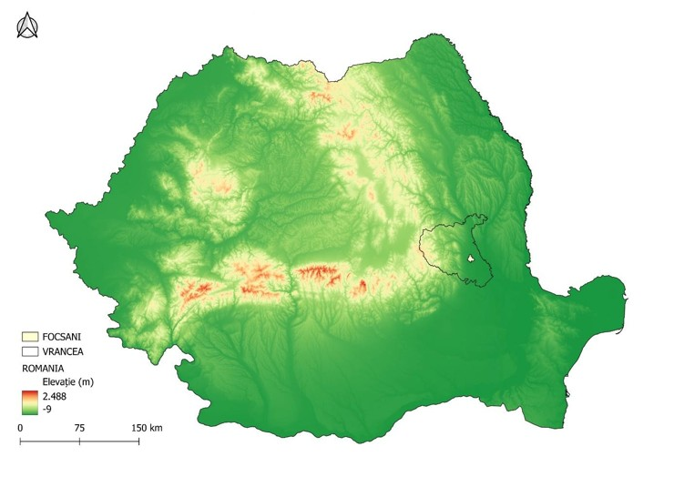

Study Area
Geographical Framework and Context
Focșani Municipality lies within Vrancea County, at the contact zone between the Sub-Carpathians and the Romanian Plain. The administrative area also includes ten neighbouring localities: Odobești, Vânători, Cîmpineanca, Vârteșcoiu, Golești, Rastoaca, Milcovul, Slobozia Ciorăști, Cotești and Cârligele, which are analysed together to capture the broader dynamics of urban expansion around the municipality.
